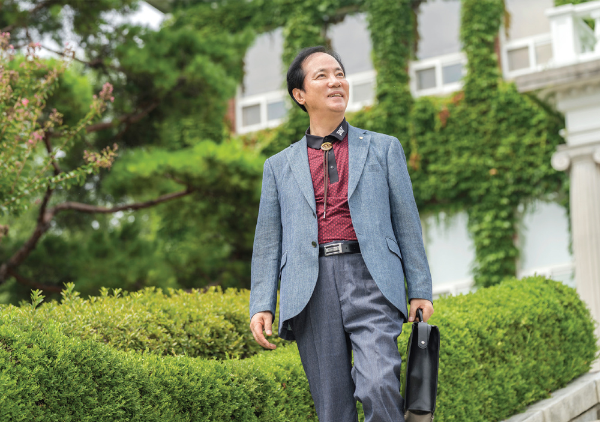

다른그림찾기
EVENT
두 눈 크게 뜨고
두 사진 속 다른 부분을 찾아주세요!
 친애하는 당신에게
친애하는 당신에게
대구 경신고등학교 퇴임 조병렬 선생님
글. 최선주 사진. 정우철 영상. 최의인
코로나19 예방수칙을 철저히 준수하며 촬영을 진행했습니다.
책 읽기를 좋아하던 학생에게는 꿈이 있었다. 좋아하는 책을 마음껏 읽고, 쓰고 싶은 글을 써 내려가는 꿈. 하지만 교단에 서서 학생들을 가르치는 일을 하며 인생의 반을 보내다 보니 어느새 그 꿈은 희미해져갔다. 퇴임한 후 그는 다시 꿈을 찾아가 보려 한다. 수필가로서 제2의 삶을 살며 일상의 모든 요소들을 글에 담으며. 글로써 자신의 꿈을 찾아가고 있는 조병렬 선생님의 이야기다.
안녕하세요. 저는 1971년부터 경북 소재 공립학교에서 근무했습니다. 그러다가 1980년부터는 대구 경신고등학교에서 33년 동안 국어교사로 일하고, 정년퇴임했어요. 지금은 글을 쓰고 글쓰기 강의를 하며 하루하루를 즐겁게 보내고 있는 수필가 조병렬입니다.
어릴 적부터 책 읽기를 좋아했어요. 하지만 시골에서 학교를 다녀서 읽을 책을 구하기가 쉽지 않았죠. 고등학교에 진학한 후부터는 도서실에서 책을 실컷 볼 수 있었습니다. 제가 거의 매일 도서실에 와서 책을 읽으니, 도서 담당 선생님께서 도서실 열쇠까지 맡기며 관리하라고 하더라고요. 그때부터 도서실에서 읽고 싶은 책을 마음껏 읽고, 공부도 했어요. 2년 연속 다독상을 받기도 하고요. 이것이 계기가 되어 자연스럽게 국어교사로 이어진 것 같습니다.
교직 생활을 돌아보면, 보람 있고 행복했던 적이 많았던 것 같습니다. 그중에서도 경신고등학교에서의 교사 생활이 떠오릅니다. 대학 진학 지도로 매일이 전쟁 같았거든요. 삼십 대 젊은 시절에 10년 중 9년을 고3 담임을 맡았으니 말 다했죠. 이른 아침부터 밤까지 학생들과 하루를 같이 보냈어요. 여러 선생님들, 학생들과 열심히 노력해 대구는 물론이고 전국적으로 서울대학교 진학률이 최고 수준으로 오르는 명성을 떨쳤습니다. 바쁜 탓에 제 아이들이 초등학교 다닐 때까지 아버지 역할을 제대로 못한 것 같아 부끄럽지만, 훌륭한 제자들을 얻었으니 나름 보람이라고 생각합니다.
학창 시절에는 글쓰기보다 책 읽기를 더 좋아했습니다. 재직 시에는 대학입시 지도에 여념이 없어 글쓰기는 엄두도 못 내다가 지천명의 나이가 훨씬 지나서야 늦게나마 문학의 길에 나섰습니다. 글쓰기를 시작하면서 자아 정체성을 차츰 찾아갔던 것 같아요. 글감이 떠올라 밤새워 초고를 완성했을 때의 그 희열은 말로 표현할 수 없는 즐거움이고 기쁨이었습니다.
2004년, 수필 전문 잡지에 공모해 신인상을 받은 기억은 아직도 생생합니다. 심사위원장의 심사평이 책에 함께 실렸는데, ‘대단한 신인의 탄생이다’라는 그 첫 문장이 저를 더욱 들뜨게 하더라고요. 이렇게 보면, 글은 작가에게는 쾌감과 만족감을 주고 독자가 공감할 때 더 매력적으로 다가오는 것 같아요. 가끔 제 글을 보고 기쁘고 만족스러울 때가 있는데 그때의 희열은 글을 써본 사람만이 느낄 수 있지 않을까요? 글을 쓰고 읽는 모든 과정에서 행복을 느낍니다.
수필 <왕대밭에 왕대 나고>입니다. 수필가의 삶을 살게 해준 작품이거든요. 또 <2011년 그날을 향해 달린다>는 제1회 대구시민 문예작품 공모전에서 최우수상을 받은 작품인데요. 제가 받은 최초의 최우수상이라 남다른 의미가 있습니다. 그리고 <재능 기부의 향기>는 2017년 사립학교교직원연금공단 제1회 ‘성공의 인생이모작 수기공모’에서 최우수상을 받은 작품입니다. 제 인생이 고스란히 담겨 있어서 지금까지도 애착이 가는 작품입니다.
제가 주로 쓰는 수필은 생활 속에서 보고 듣고 느끼고 생각한 것, 곧 삶의 경험을 자유롭고 다양한 형식으로 표현하는 산문 문학입니다. 저는 특별한 영감을 기다리지는 않습니다. 글을 쓰고자 하는 관심만 있으면 글감은 무궁무진하거든요.
생활에 관심을 두고 글감을 찾고자 하는 의욕이 있다면 과거, 현재, 미래의 시간에서도 작품화가 가능합니다. 특히 수필은 사실성을 중시하는 문학이기 때문에 일상 생활과 삶 자체가 글감이 될 수 있습니다. 저는 특별한 글의 원천이 되는 요소가 있지는 않습니다. 내용상, 형식상 다양한 작품들을 쓰려고 노력하거든요. 다만, 아버지가 일찍 돌아가시고 남매를 키우며 외롭고 힘들게 사신 어머니에 대한 글이 많은 편입니다. 첫 수필집에는 ‘사모사시사’란 이름으로 계절별로 어머니에 대한 작품이 담겨 있고, 얼마 전에도 <어머니의 불빛>이란 작품을 썼는데, 상당히 애착이 갑니다.
누구나 글을 처음 쓸 때는 두려움을 갖습니다. 그래서 저는 처음부터 너무 잘 쓰려고도 하지 말고, 옆 사람과 비교도 하지 말라고 합니다. 습작기 때에는 “부끄러워하지 말라”고 용기를 줍니다.
또 저는 “적자생존”이란 말을 우스갯소리로 자주 합니다. 머릿속에서 이것저것 상상만 하고 지나갈 것이 아니라 몇 줄이라도 자주 매일 적어나가라는 뜻입니다. 자신의 글은 ‘적어야 살아남는다’는 것입니다. 길을 걷다가도 자다가도 무엇이 떠오르면 바로 메모해야지, 그렇지 않으면 그 순간의 감정도 사라지고 기억도 잊히거든요.
오래전에 본, 파리의 정신과 의사 프랑수아 를로르가 쓴 특별한 행복론 <꾸뻬 씨의 행복 여행>을 추천하고 싶습니다. 이 책에는 사람들이 불행을 느끼는 23가지 요소를 분석하고 있는데, 그중에서 작가 프랑수아 를로르가 지적한 불행의 씨앗 첫 번째는 ‘비교’라고 합니다. 저는 그 부분에 대해 공감했습니다. 우리는 시시때때로 비교하면서 생활하지 않습니까. 대부분의 사람은 나보다 나은 상향식 비교를 하게 되는데, 이 점이 불행의 씨앗이 된다는 것입니다.
이렇듯 이 책은 물질적인 풍요보다 정신적인 만족이 행복의 기준이 되어가는 시대, 복잡한 현대인의 심리를 짚어보면서 누구나 공감할 수 있는 이야기로 마음을 움직입니다.
특별히 다시 자서전을 낼 계획은 없습니다. 제가 지금까지 쓴 작품들과 앞으로 쓸 글들이 저의 자서전과 다를 바 없기 때문입니다. 그래도 서두의 문구를 떠올려 본다면, ‘삶에 정답은 없으나 명답은 있다’라는 말이 언뜻 생각납니다. 누구나 명답의 삶을 위해 최선의 노력을 다하며 살아가잖아요. 명품 같은 멋진 삶을 위해서 건강하고 보람 있고 행복하게 살려고 합니다.
저는 앞으로의 특별한 목표를 생각해 보지 않았습니다. 나이테가 늘어가면서 가급적 그런 것을 잊고 살려고 하는 편입니다. 현재 인연이 닿은 글벗들과 함께 행복한 인생을 만들어가고 싶을 뿐입니다. 어른에게도 장난감 놀이가 필요하다는 생각으로, 생활 속 수필 쓰기를 통해서 즐겁게 말입니다. ‘신선놀음 같은 글쓰기 활동이 바로 신선 같은 삶이 아닐까’라는 생각으로 늘 즐겁고 보람 있게 강의하고 있습니다.
여유롭게 글을 사랑하며 사는 사람들은 신선과 다를 바가 없습니다. 옛날 아주 정직하고 착한 선비가 천상 신선으로부터 큰 상을 받게 되어 소망을 말하라고 했을 때의 일화가 생각납니다. 선비는 “잠잘 집과 입을 옷이 있고 끼니를 거르지 않으면서, 가끔 마당에 나가 화초에 물을 주고 조용한 시간에 마음 편히 책이나 읽으며 살고 싶다”라고 말했더니, 갑자기 신선이 버럭 화를 내면서 큰 소리로 말합니다. “예끼, 이 사람아! 나도 그렇게 못 산다.” 글벗님들 이 일화를 생각하며, 그저 문학과 함께 늘 행복하게 사셨으면 좋겠습니다. 감사합니다.

수필집 <왕대밭에 왕대 나고>, <그래도 이 세상이 낫다>, 평론집 <현대수필 창작이론과 평설>은 조병렬 선생님의 글 인생에서 빼놓을 수 없는 작품들이다. 이 작품들은 그가 퇴임 후 꿈이었던 문학의 길을 걸으며 세상 밖에 내놓은 꿈의 결과물이기에 더욱 특별하다. 아직도 그는 글감이 떠올라 밤을 새워 초고를 완성했을 때의 희열을 잊을 수 없다고 한다. 글을 쓰고, 세상에 내놓는 모든 과정이 그에게는 즐거움이자, 기쁨이라고.
교직 생활을 마치고 쓴 글들은 운이 좋게도 좋은 결과를 가져다주었다. 2004년 <수필과 비평> 신인상 당선패, 2008년 제1회 대구시민 문예작품 공모전 최우수상, 2017년 사립학교교직원연금공단 제1회 ‘성공의 인생이모작 수기공모’ 최우수상, 2021년 대구예술상 등이 그 결과물이다. 이 상패와 상장들은 그의 글쓰기 인생에서 두고두고 기억하고 싶은 행복한 기억이라고 한다.
‘친애하는 당신에게’의 주인공이 되어주신 사학가족에게 초상화를 선물로 드립니다.
매호 ‘친애하는 당신에게’에서는 테마에 어울리는 사학가족을 기다립니다. 참여 신청해주세요.
- 초상화를 선물로 드립니다 -